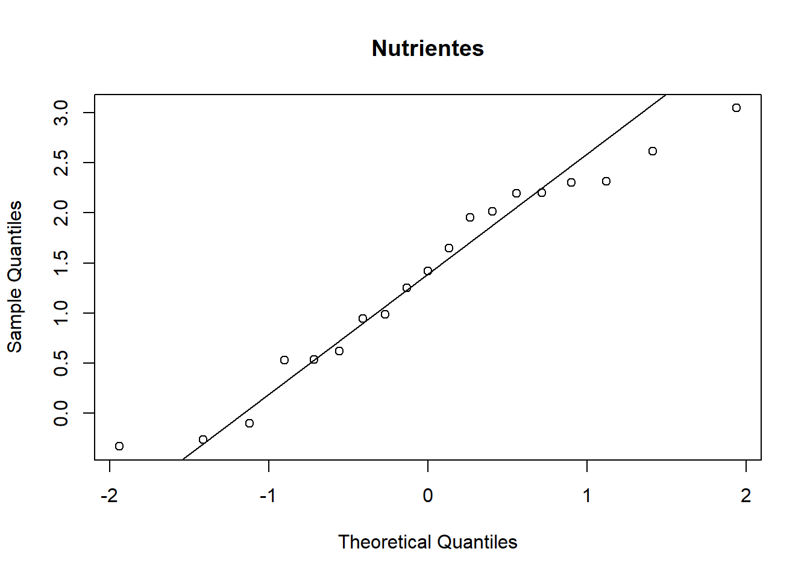
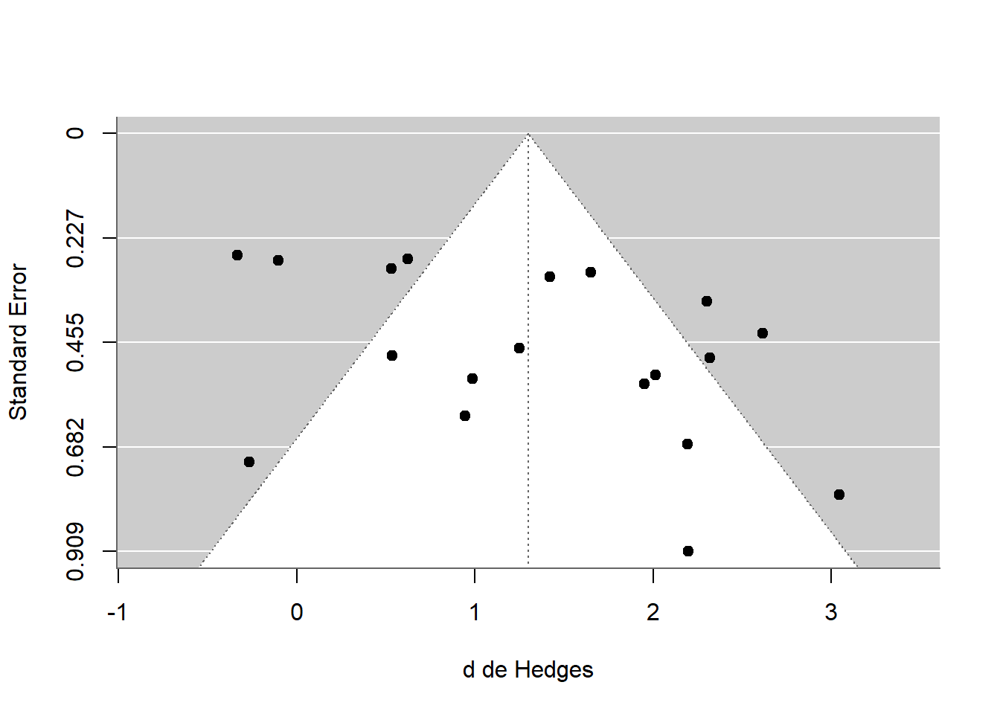
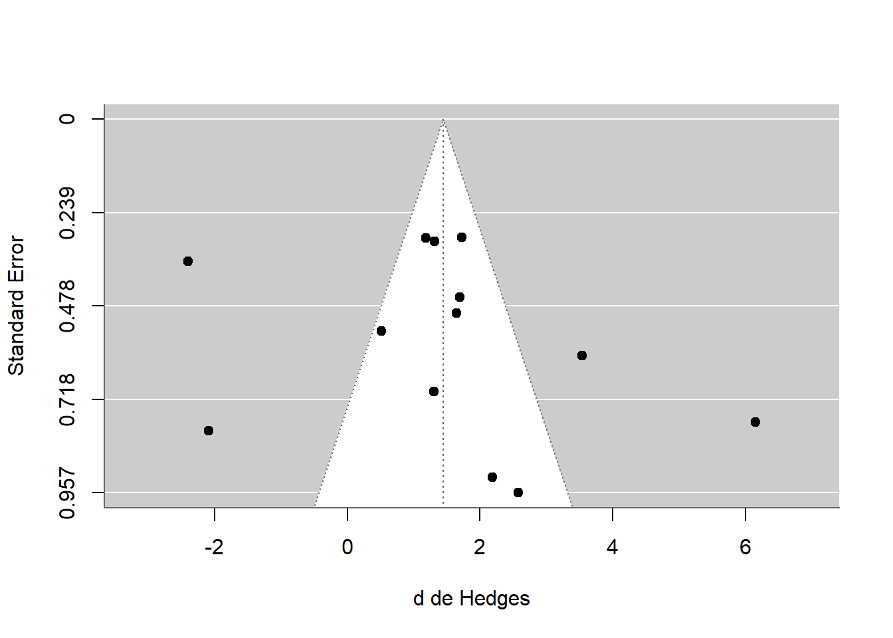

Simular dados com o mesmo desenho e reproduzir a análise global (sem moderadoras).
Ver, passo a passo, como lidar com vários efeitos por estudo e como checar viés de publicação.
Dados simulados
Os dados deste exemplo não são os do artigo. Eles foram gerados por R/gerar-dados-formigas.R com o mesmo número de estudos e de efeitos por variável do artigo e com efeitos médios próximos aos da Figura 1. Por isso os resultados devem se parecer com os publicados, mas não coincidir.
O artigo
Pergunta. As formigas cortadeiras (Atta e Acromyrmex) são consideradas “engenheiras do ecossistema”: o ninho e o material descartado (refuse) acumulam nutrientes. Isso sempre melhora o solo e o crescimento das plantas ao redor do ninho? Estudos isolados dão resultados conflitantes.
Desenho. Cada estudo primário compara sítios com ninho (tratamento) e sítios vizinhos sem ninho (controle). O artigo reuniu 34 estudos independentes e analisou seis variáveis-foco:
Grupo
Variável-foco
Estudos
Efeitos
Fertilidade do solo
Nutrientes (C, N, P, K)
19
66
Fertilidade do solo
Cátions (Al, Ca, Mg, Na)
13
29
Fertilidade do solo
pH
6
7
Desempenho da planta
Crescimento (biomassa, altura, diâmetro)
13
26
Desempenho da planta
Densidade (cobertura, indivíduos/área)
11
12
Desempenho da planta
Riqueza de espécies
8
10
Métodos principais (resumo do que vamos reproduzir):
Medida de efeito:d de Hedges (diferença média padronizada), com valores positivos indicando mais fertilidade ou desempenho no ninho.
Vários efeitos por estudo: um mesmo estudo mede C, N, P e K na mesma amostra de solo. Para evitar pseudo-replicação, cada estudo gera um efeito composto por variável-foco: a média ponderada dos efeitos, com variância calculada sob correlação r = 0 e sob r = 1 entre as medidas (análise de sensibilidade) (Mengersen, Jennions, e Schmid 2013).
Modelo: efeitos aleatórios, escolhido a priori, com IC 95% bootstrap corrigido para viés (999 reexecuções) no MetaWin (Rosenberg, Adams, e Gurevitch 2000).
Viés de publicação: gráficos de quantis normais, fail-safe N de Rosenthal e de Rosenberg, funil, teste de correlação de postos de Begg e trim-and-fill, no metafor.
O que fica de fora
O artigo também testa moderadoras (substrato, local do descarte, gênero da formiga e latitude). Aqui reproduzimos só a análise global; as moderadoras seguem a mesma lógica do capítulo 9.
Os dados
O arquivo formigas_cortadeiras.csv tem uma linha por efeito: uma medida em um estudo, com média, desvio padrão e n de ninho e controle.
estudo foco medida yi vi
1 S01 nutrientes P 1.5169 0.2341
2 S01 nutrientes C 1.3567 0.2237
3 S01 nutrientes K 1.2440 0.2170
4 S01 nutrientes N 0.9286 0.2014
5 S02 nutrientes C 0.1968 0.0744
6 S02 nutrientes N 0.0343 0.0741
7 S02 nutrientes K 0.1952 0.0744
8 S02 nutrientes P -0.9220 0.0819
measure = "SMD" retorna o g de Hedges (o d corrigido para amostras pequenas, o mesmo do artigo). Como ninho é o grupo 1, valores positivos significam mais nutrientes (ou mais crescimento) no ninho.
Passo 2: um efeito composto por estudo
Um estudo com quatro nutrientes tem quatro efeitos correlacionados (vêm da mesma amostra de solo). Se os usássemos separados, o estudo teria peso quatro vezes maior. A solução é resumir cada estudo, em cada variável-foco, em um único efeito.
O estimador é a média ponderada pelo inverso da variância, \(w_i = 1/v_i\). A variância dessa média depende da correlação \(r\) entre as medidas, que quase nunca é relatada:
Com \(r = 0\) (medidas independentes) a fórmula reduz a \(V = 1/\sum w_i\), a menor variância possível.
Com \(r = 1\) (correlação perfeita) as medidas não trazem informação nova e a variância é a maior possível.
composto <-function(d, r) { w <-1/ d$vi est <-sum(w * d$yi) /sum(w)# sum(w^2 * vi): termos i = j; (sum(w * sqrt(vi)))^2: todos os pares com r = 1 var <- (sum(w^2* d$vi) + r * (sum(w *sqrt(d$vi))^2-sum(w^2* d$vi))) /sum(w)^2tibble(yi = est, vi = var, k =nrow(d))}compostos <-map_dfr(c(0, 1), function(r) { efeitos |>group_by(foco, estudo) |>group_modify(~composto(.x, r)) |>ungroup() |>mutate(r = r)})compostos |>filter(foco =="nutrientes", r ==1) |>head()
Os intervalos acima são os de Wald (normais). O artigo usa bootstrap, que não assume normalidade da estimativa.
IC 95% bootstrap corrigido para viés
A ideia: sortear estudos com reposição 999 vezes, reestimar o efeito médio em cada amostra e usar os percentis da distribuição obtida. A correção de viés desloca os percentis de acordo com a proporção de estimativas bootstrap abaixo da estimativa original.
ic_boot <-function(yi, vi, B =999) { est <-coef(rma(yi, vi, method ="DL")) b <-replicate(B, { i <-sample(length(yi), replace =TRUE)coef(rma(yi[i], vi[i], method ="DL")) }) z0 <-qnorm(mean(b < est))quantile(b, pnorm(2* z0 +qnorm(c(0.025, 0.975))), names =FALSE)}set.seed(2015)boot <- compostos |>filter(r ==1) |>group_by(foco) |>group_modify(function(d, chave) { ci <-ic_boot(d$yi, d$vi)tibble(boot_inf = ci[1], boot_sup = ci[2]) }) |>ungroup()resultado <- global |>filter(r ==1) |>left_join(boot, by ="foco") |>mutate(signif = boot_inf >0| boot_sup <0)resultado |>select(foco, k, d, boot_inf, boot_sup, signif)
Se as conclusões são as mesmas com os dois extremos de correlação, o resultado é robusto à escolha de \(r\). O artigo apresenta ambos os limites de P e mostra nas figuras apenas \(r = 1\).
Resultado: nosso exemplo × Figura 1 do artigo
Valores do artigo lidos aproximadamente da Figura 1 (estimativas visuais, não os valores exatos da Tabela S1):
O padrão esperado é o do artigo: efeito positivo para nutrientes, cátions e crescimento das plantas; efeito indistinguível de zero para pH, densidade e riqueza.
Exercício 2
Refaça a simulação com set.seed(2016) em R/gerar-dados-formigas.R e rode a página de novo. Os efeitos médios mudam? E as conclusões (significativo ou não)? O que isso mostra sobre estimar efeitos com 6 a 19 estudos?
Viés de publicação
O artigo avalia se estudos com efeito pequeno ou negativo podem estar “faltando”. Vamos repetir as cinco verificações para nutrientes.
nut <- compostos |>filter(foco =="nutrientes", r ==1)m_nut <-rma(yi, vi, data = nut, method ="DL")
1. Gráfico de quantis normais
Se os tamanhos de efeito são aproximadamente normais, os pontos ficam sobre a reta. Lacunas ou assimetria sugerem estudos ausentes.
qqnorm(nut$yi, main ="Nutrientes")qqline(nut$yi)

2. Fail-safe N
Quantos estudos com efeito nulo seriam necessários para anular o resultado? Rosenthal usa o escore z de cada estudo; Rosenberg usa os pesos da metanálise.
fsn(yi, vi, data = nut, type ="Rosenthal")
Fail-safe N Calculation Using the Rosenthal Approach
Observed Significance Level: <.0001
Target Significance Level: 0.05
Fail-safe N: 1031
fsn(yi, vi, data = nut, type ="Rosenberg")
Fail-safe N Calculation Using the Rosenberg Approach
Average Effect Size: 1.0174
Observed Significance Level: <.0001
Target Significance Level: 0.05
Fail-safe N: 594
Uma regra clássica (Rosenthal) considera o resultado robusto se fail-safe N > 5k + 10, com k = 19 estudos, isto é, 105.
3. Gráfico de funil
funnel(m_nut, xlab ="d de Hedges")

4. Teste de correlação de postos de Begg
Mede a correlação entre o efeito padronizado e sua variância. Correlação alta indica funil assimétrico.
ranktest(m_nut)
Rank Correlation Test for Funnel Plot Asymmetry
Kendall's tau = 0.1813, p = 0.2983
5. Trim-and-fill
Estima quantos estudos faltam em cada lado do funil e recalcula a média com os estudos imputados.
trimfill(m_nut, side ="left")
Estimated number of missing studies on the left side: 2 (SE = 2.9187)
Random-Effects Model (k = 21; tau^2 estimator: DL)
tau^2 (estimated amount of total heterogeneity): 0.8743 (SE = 0.3825)
tau (square root of estimated tau^2 value): 0.9350
I^2 (total heterogeneity / total variability): 83.70%
H^2 (total variability / sampling variability): 6.14
Test for Heterogeneity:
Q(df = 20) = 122.7122, p-val < .0001
Model Results:
estimate se zval pval ci.lb ci.ub
1.1452 0.2316 4.9448 <.0001 0.6913 1.5991 ***
---
Signif. codes: 0 '***' 0.001 '**' 0.01 '*' 0.05 '.' 0.1 ' ' 1
trimfill(m_nut, side ="right")
Estimated number of missing studies on the right side: 0 (SE = 2.4890)
Random-Effects Model (k = 19; tau^2 estimator: DL)
tau^2 (estimated amount of total heterogeneity): 0.8217 (SE = 0.3778)
tau (square root of estimated tau^2 value): 0.9065
I^2 (total heterogeneity / total variability): 83.43%
H^2 (total variability / sampling variability): 6.04
Test for Heterogeneity:
Q(df = 18) = 108.6572, p-val < .0001
Model Results:
estimate se zval pval ci.lb ci.ub
1.2995 0.2364 5.4978 <.0001 0.8362 1.7628 ***
---
Signif. codes: 0 '***' 0.001 '**' 0.01 '*' 0.05 '.' 0.1 ' ' 1
Se o efeito continua significativo depois de imputar os estudos, a conclusão resiste ao possível viés, como argumentam os autores.
Exercício 3
Repita as cinco verificações para cátions, onde o artigo encontrou assimetria no funil. Os dados simulados reproduzem esse padrão? Lembre que a assimetria também pode vir de heterogeneidade real.
Ver solução
cat_ <- compostos |>filter(foco =="cations", r ==1)m_cat <-rma(yi, vi, data = cat_, method ="DL")funnel(m_cat, xlab ="d de Hedges")

Ver solução
ranktest(m_cat)
Rank Correlation Test for Funnel Plot Asymmetry
Kendall's tau = 0.1026, p = 0.6754
Ver solução
fsn(yi, vi, data = cat_, type ="Rosenthal")
Fail-safe N Calculation Using the Rosenthal Approach
Observed Significance Level: <.0001
Target Significance Level: 0.05
Fail-safe N: 397
Ver solução
trimfill(m_cat, side ="left")
Estimated number of missing studies on the left side: 4 (SE = 2.4368)
Random-Effects Model (k = 17; tau^2 estimator: DL)
tau^2 (estimated amount of total heterogeneity): 4.2307 (SE = 2.0178)
tau (square root of estimated tau^2 value): 2.0569
I^2 (total heterogeneity / total variability): 94.23%
H^2 (total variability / sampling variability): 17.33
Test for Heterogeneity:
Q(df = 16) = 277.2300, p-val < .0001
Model Results:
estimate se zval pval ci.lb ci.ub
0.5728 0.5240 1.0930 0.2744 -0.4543 1.5998
---
Signif. codes: 0 '***' 0.001 '**' 0.01 '*' 0.05 '.' 0.1 ' ' 1
Ver solução
trimfill(m_cat, side ="right")
Estimated number of missing studies on the right side: 0 (SE = 2.0265)
Random-Effects Model (k = 13; tau^2 estimator: DL)
tau^2 (estimated amount of total heterogeneity): 3.0756 (SE = 1.6400)
tau (square root of estimated tau^2 value): 1.7537
I^2 (total heterogeneity / total variability): 93.32%
H^2 (total variability / sampling variability): 14.97
Test for Heterogeneity:
Q(df = 12) = 179.6975, p-val < .0001
Model Results:
estimate se zval pval ci.lb ci.ub
1.4430 0.5144 2.8051 0.0050 0.4347 2.4512 **
---
Signif. codes: 0 '***' 0.001 '**' 0.01 '*' 0.05 '.' 0.1 ' ' 1
O que aprendemos
Uma metanálise publicada pode ser reproduzida em poucas linhas com escalc() e rma(); o trabalho está em organizar os dados (um efeito por linha, com média, DP e n).
Quando um estudo traz várias medidas correlacionadas, resuma-as em um efeito composto e faça a análise de sensibilidade para a correlação.
Os modelos multinível do capítulo 12 são uma alternativa a esse composto, pois usam todos os efeitos sem pseudo-replicação.
Conclusões com poucos estudos e alta heterogeneidade vêm com intervalos largos; checar viés de publicação é parte do relato.
Farji-Brener, Alejandro G., e Victoria Werenkraut. 2015. «A meta-analysis of leaf-cutting ant nest effects on soil fertility and plant performance». Ecological Entomology 40 (2): 150–58. https://doi.org/10.1111/een.12169.
Mengersen, Kerrie, Michael D. Jennions, e Christopher H. Schmid. 2013. «Statistical models and approaches to compare effect sizes from several studies». Handbook of Meta-analysis in Ecology and Evolution, 89–107.
Rosenberg, Michael S., Dean C. Adams, e Jessica Gurevitch. 2000. MetaWin: Statistical Software for Meta-Analysis. Version 2. Sinauer Associates.
Código fonte
---title: "Exemplo 1 · Formigas cortadeiras, solo e plantas"subtitle: "Reproduzindo a análise global de Farji-Brener & Werenkraut (2015) com dados simulados"---```{r}#| include: falsesource("R/setup.R")```::: {.callout-note}## Objetivos- Entender a pergunta, os dados e os métodos de uma metanálise publicada em entomologia [@farji2015].- Simular dados com o mesmo desenho e reproduzir a **análise global** (sem moderadoras).- Ver, passo a passo, como lidar com **vários efeitos por estudo** e como checar **viés de publicação**.:::::: {.callout-warning}## Dados simuladosOs dados deste exemplo **não são os do artigo**. Eles foram gerados por`R/gerar-dados-formigas.R` com o mesmo número de estudos e de efeitos porvariável do artigo e com efeitos médios próximos aos da Figura 1. Por issoos resultados devem se **parecer** com os publicados, mas não coincidir.:::## O artigo**Pergunta.** As formigas cortadeiras (*Atta* e *Acromyrmex*) sãoconsideradas "engenheiras do ecossistema": o ninho e o material descartado(*refuse*) acumulam nutrientes. Isso sempre melhora o solo e o crescimentodas plantas ao redor do ninho? Estudos isolados dão resultados conflitantes.**Desenho.** Cada estudo primário compara **sítios com ninho** (tratamento)e **sítios vizinhos sem ninho** (controle). O artigo reuniu 34 estudosindependentes e analisou seis variáveis-foco:| Grupo | Variável-foco | Estudos | Efeitos ||---|---|---:|---:|| Fertilidade do solo | Nutrientes (C, N, P, K) | 19 | 66 || Fertilidade do solo | Cátions (Al, Ca, Mg, Na) | 13 | 29 || Fertilidade do solo | pH | 6 | 7 || Desempenho da planta | Crescimento (biomassa, altura, diâmetro) | 13 | 26 || Desempenho da planta | Densidade (cobertura, indivíduos/área) | 11 | 12 || Desempenho da planta | Riqueza de espécies | 8 | 10 |**Métodos principais** (resumo do que vamos reproduzir):1. **Medida de efeito:** *d* de Hedges (diferença média padronizada), com valores positivos indicando mais fertilidade ou desempenho no ninho.2. **Vários efeitos por estudo:** um mesmo estudo mede C, N, P e K na mesma amostra de solo. Para evitar pseudo-replicação, cada estudo gera um **efeito composto** por variável-foco: a média ponderada dos efeitos, com variância calculada sob **correlação r = 0** e sob **r = 1** entre as medidas (análise de sensibilidade) [@mengersen2013].3. **Modelo:** efeitos aleatórios, escolhido *a priori*, com **IC 95% bootstrap** corrigido para viés (999 reexecuções) no MetaWin[@rosenberg2000].4. **Viés de publicação:** gráficos de quantis normais, *fail-safe N* de Rosenthal e de Rosenberg, funil, teste de correlação de postos de Begg e *trim-and-fill*, no `metafor`.::: {.callout-tip}## O que fica de foraO artigo também testa **moderadoras** (substrato, local do descarte, gêneroda formiga e latitude). Aqui reproduzimos só a análise global; asmoderadoras seguem a mesma lógica do capítulo 9.:::## Os dadosO arquivo `formigas_cortadeiras.csv` tem uma linha por **efeito**: umamedida em um estudo, com média, desvio padrão e *n* de ninho e controle.```{r}formigas <-read_csv("dados/formigas_cortadeiras.csv")glimpse(formigas)formigas |>group_by(foco) |>summarise(estudos =n_distinct(estudo), efeitos =n())```Os números de estudos e de efeitos coincidem com a tabela acima.## Passo 1: efeito de cada medida (*d* de Hedges)```{r}efeitos <-escalc(measure ="SMD",m1i = media_ninho, sd1i = dp_ninho, n1i = n_ninho,m2i = media_controle, sd2i = dp_controle, n2i = n_controle,data = formigas)efeitos |>select(estudo, foco, medida, yi, vi) |>head(8)````measure = "SMD"` retorna o *g* de Hedges (o *d* corrigido para amostraspequenas, o mesmo do artigo). Como ninho é o grupo 1, valores positivossignificam mais nutrientes (ou mais crescimento) no ninho.## Passo 2: um efeito composto por estudoUm estudo com quatro nutrientes tem quatro efeitos **correlacionados** (vêmda mesma amostra de solo). Se os usássemos separados, o estudo teria pesoquatro vezes maior. A solução é resumir cada estudo, em cada variável-foco,em **um único efeito**.O estimador é a média ponderada pelo inverso da variância, $w_i = 1/v_i$. Avariância dessa média depende da correlação $r$ entre as medidas, que quasenunca é relatada:$$V = \frac{\sum_i\sum_j w_i w_j \, r_{ij}\sqrt{v_i v_j}}{\left(\sum_i w_i\right)^2}, \qquad r_{ii} = 1$$- Com $r = 0$ (medidas independentes) a fórmula reduz a $V = 1/\sum w_i$, a menor variância possível.- Com $r = 1$ (correlação perfeita) as medidas não trazem informação nova e a variância é a maior possível.```{r}composto <-function(d, r) { w <-1/ d$vi est <-sum(w * d$yi) /sum(w)# sum(w^2 * vi): termos i = j; (sum(w * sqrt(vi)))^2: todos os pares com r = 1 var <- (sum(w^2* d$vi) + r * (sum(w *sqrt(d$vi))^2-sum(w^2* d$vi))) /sum(w)^2tibble(yi = est, vi = var, k =nrow(d))}compostos <-map_dfr(c(0, 1), function(r) { efeitos |>group_by(foco, estudo) |>group_modify(~composto(.x, r)) |>ungroup() |>mutate(r = r)})compostos |>filter(foco =="nutrientes", r ==1) |>head()```::: {.callout-important}## Exercício 1Para o estudo `S01` (variável-foco `nutrientes`), compare `vi` calculado com$r = 0$ e com $r = 1$. Em qual caso o estudo "pesa" mais no modelo?:::```{r}#| code-fold: true#| code-summary: "Ver solução"compostos |>filter(foco =="nutrientes", estudo =="S01") |>mutate(peso =1/ vi)```Com $r = 0$ a variância é menor e, portanto, o peso é maior.## Passo 3: modelo de efeitos aleatóriosO artigo usa o MetaWin, cujo modelo de efeitos aleatórios estima $\tau^2$pelo método de **DerSimonian-Laird**. No `metafor` isso é `method = "DL"`.```{r}global <- compostos |>group_by(foco, r) |>group_modify(function(d, chave) { m <-rma(yi, vi, data = d, method ="DL")tibble(k = m$k, d =coef(m), ic_inf = m$ci.lb, ic_sup = m$ci.ub,p = m$pval, tau2 = m$tau2, I2 = m$I2) }) |>ungroup()global |>filter(r ==1)```Os intervalos acima são os de Wald (normais). O artigo usa **bootstrap**,que não assume normalidade da estimativa.### IC 95% bootstrap corrigido para viésA ideia: sortear estudos com reposição 999 vezes, reestimar o efeito médioem cada amostra e usar os percentis da distribuição obtida. A correção deviés desloca os percentis de acordo com a proporção de estimativasbootstrap abaixo da estimativa original.```{r}ic_boot <-function(yi, vi, B =999) { est <-coef(rma(yi, vi, method ="DL")) b <-replicate(B, { i <-sample(length(yi), replace =TRUE)coef(rma(yi[i], vi[i], method ="DL")) }) z0 <-qnorm(mean(b < est))quantile(b, pnorm(2* z0 +qnorm(c(0.025, 0.975))), names =FALSE)}set.seed(2015)boot <- compostos |>filter(r ==1) |>group_by(foco) |>group_modify(function(d, chave) { ci <-ic_boot(d$yi, d$vi)tibble(boot_inf = ci[1], boot_sup = ci[2]) }) |>ungroup()resultado <- global |>filter(r ==1) |>left_join(boot, by ="foco") |>mutate(signif = boot_inf >0| boot_sup <0)resultado |>select(foco, k, d, boot_inf, boot_sup, signif)```Como no artigo, o efeito é considerado significativo a 5% quando o ICbootstrap **não inclui o zero**.## Passo 4: análise de sensibilidade (r = 0 × r = 1)```{r}global |>select(foco, r, d, p) |>pivot_wider(names_from = r, values_from =c(d, p), names_sep ="_r") |>mutate(across(where(is.numeric), \(x) round(x, 3)))```Se as conclusões são as mesmas com os dois extremos de correlação, oresultado é robusto à escolha de $r$. O artigo apresenta ambos os limitesde P e mostra nas figuras apenas $r = 1$.## Resultado: nosso exemplo × Figura 1 do artigoValores do artigo lidos **aproximadamente** da Figura 1 (estimativasvisuais, não os valores exatos da Tabela S1):```{r}artigo <-tribble(~foco, ~d_artigo, ~inf_artigo, ~sup_artigo,"nutrientes", 1.5, 0.8, 2.2,"cations", 1.6, 0.9, 2.4,"pH", -1.1, -3.5, 0.3,"riqueza", -0.5, -1.5, 0.4,"densidade", -0.15, -1.7, 1.1,"crescimento", 1.6, 0.25, 2.7)rotulos <-c(nutrientes ="Nutrientes", cations ="Cátions", pH ="pH",riqueza ="Riqueza", densidade ="Densidade",crescimento ="Crescimento")comparacao <-bind_rows( resultado |>transmute(foco, fonte ="Dados simulados", d, inf = boot_inf, sup = boot_sup), artigo |>transmute(foco, fonte ="Artigo (aprox.)",d = d_artigo, inf = inf_artigo, sup = sup_artigo)) |>mutate(foco =factor(rotulos[foco], levels =rev(rotulos)))ggplot(comparacao, aes(d, foco, colour = fonte)) +geom_vline(xintercept =0, linetype =2) +geom_pointrange(aes(xmin = inf, xmax = sup),position =position_dodge(width =0.5)) +labs(x ="Tamanho do efeito (d de Hedges) e IC 95%", y =NULL,colour =NULL) +theme(legend.position ="bottom")```O padrão esperado é o do artigo: efeito positivo para nutrientes, cátions ecrescimento das plantas; efeito indistinguível de zero para pH, densidade eriqueza.::: {.callout-important}## Exercício 2Refaça a simulação com `set.seed(2016)` em `R/gerar-dados-formigas.R` erode a página de novo. Os efeitos médios mudam? E as conclusões(significativo ou não)? O que isso mostra sobre estimar efeitos com 6 a 19estudos?:::## Viés de publicaçãoO artigo avalia se estudos com efeito pequeno ou negativo podem estar"faltando". Vamos repetir as cinco verificações para **nutrientes**.```{r}nut <- compostos |>filter(foco =="nutrientes", r ==1)m_nut <-rma(yi, vi, data = nut, method ="DL")```### 1. Gráfico de quantis normaisSe os tamanhos de efeito são aproximadamente normais, os pontos ficam sobrea reta. Lacunas ou assimetria sugerem estudos ausentes.```{r}qqnorm(nut$yi, main ="Nutrientes")qqline(nut$yi)```### 2. *Fail-safe N*Quantos estudos com efeito nulo seriam necessários para anular o resultado?Rosenthal usa o escore *z* de cada estudo; Rosenberg usa os pesos dametanálise.```{r}fsn(yi, vi, data = nut, type ="Rosenthal")fsn(yi, vi, data = nut, type ="Rosenberg")```Uma regra clássica (Rosenthal) considera o resultado robusto se*fail-safe N* > 5k + 10, com *k* = `r nrow(nut)` estudos, isto é,`r 5 * nrow(nut) + 10`.### 3. Gráfico de funil```{r}funnel(m_nut, xlab ="d de Hedges")```### 4. Teste de correlação de postos de BeggMede a correlação entre o efeito padronizado e sua variância. Correlaçãoalta indica funil assimétrico.```{r}ranktest(m_nut)```### 5. *Trim-and-fill*Estima quantos estudos faltam em cada lado do funil e recalcula a médiacom os estudos imputados.```{r}trimfill(m_nut, side ="left")trimfill(m_nut, side ="right")```Se o efeito continua significativo depois de imputar os estudos, aconclusão resiste ao possível viés, como argumentam os autores.::: {.callout-important}## Exercício 3Repita as cinco verificações para **cátions**, onde o artigo encontrouassimetria no funil. Os dados simulados reproduzem esse padrão? Lembre quea assimetria também pode vir de heterogeneidade real.:::```{r}#| code-fold: true#| code-summary: "Ver solução"cat_ <- compostos |>filter(foco =="cations", r ==1)m_cat <-rma(yi, vi, data = cat_, method ="DL")funnel(m_cat, xlab ="d de Hedges")ranktest(m_cat)fsn(yi, vi, data = cat_, type ="Rosenthal")trimfill(m_cat, side ="left")trimfill(m_cat, side ="right")```## O que aprendemos- Uma metanálise publicada pode ser reproduzida em poucas linhas com`escalc()` e `rma()`; o trabalho está em **organizar os dados** (um efeito por linha, com média, DP e *n*).- Quando um estudo traz **várias medidas correlacionadas**, resuma-as em um efeito composto e faça a análise de sensibilidade para a correlação.- Os modelos multinível do capítulo 12 são uma alternativa a esse composto, pois usam todos os efeitos sem pseudo-replicação.- Conclusões com poucos estudos e alta heterogeneidade vêm com intervalos largos; **checar viés de publicação** é parte do relato.